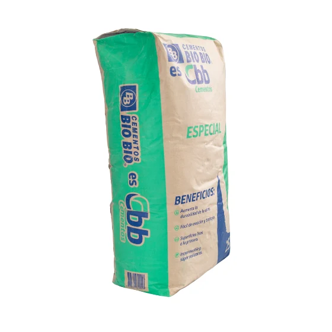

Cómo elegir el cemento correcto
Publicado el

Es la pregunta que más nos hacen y también donde más plata se pierde. Alguien llega pidiendo "un saco de cemento" sin saber que hay al menos tres tipos distintos en la bodega, y que usar el equivocado puede significar rehacer el trabajo completo dos semanas después.
Cemento gris corriente
Es el de uso general. Sirve para radieres, sobrecimientos, pegar bloques y la mayoría de los trabajos de una casa. Si el maestro no te especificó otra cosa, casi siempre es este el que necesitas.
Se vende en sacos de 25 y de 42,5 kilos. Para un trabajo chico conviene el de 25: es más fácil de cargar y, si sobra, no se te echa a perder medio saco.
Cemento de alta resistencia
Alcanza su resistencia final mucho más rápido. Se usa cuando hay que desmoldar pronto o cuando el trabajo va a recibir carga en pocos días. Cuesta más y no tiene sentido para un radier de patio.
Cemento blanco
Es decorativo. Se usa para estucos a la vista, fraguar cerámicas claras y trabajos donde el color importa. No lo compres pensando que es más fino o mejor: estructuralmente rinde parecido al gris y cuesta bastante más.
Tres errores que vemos todas las semanas
- Comprar de más "por si acaso". El cemento se endurece con la humedad del aire. Un saco abierto que queda en el patio no sirve en dos semanas.
- Guardarlo en el suelo. Aunque esté cerrado, el saco absorbe humedad desde abajo. Va sobre un pallet o unas tablas, y tapado.
- Calcular la arena a ojo. La proporción cambia el resultado más que la marca del cemento. Si tienes dudas, pregúntanos en el mesón antes de llevarte los áridos.
Cuánto necesitas
Para un radier de 10 centímetros de espesor se ocupan aproximadamente seis sacos de 25 kilos por cada metro cuadrado y medio, más la arena y el ripio correspondientes. Es una estimación gruesa: para un cálculo real trae las medidas y lo vemos juntos.